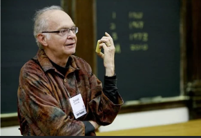

<!DOCTYPE html>
<html></html>  <head>
    <meta charset="utf-8"/>
    <title>Donald knuth</title>
 <link rel="stylesheet" href="estilos.css">
 <body style="background-color:rgb(174, 0, 255);"></body>
    <style>
      body{
            font-family: sans-serif;
        }
        .contenedor{
            background-color: antiquewhite;
            height: 100vh;
            margin: 1%;
            
        }
    </style>
</head>
<body>
 <header>
    <div class="logo">
        
       <h2 class="Donald knuth">Donald Knuth</h2>
    </div>
    <nav>
        <a href="index.html" class="nav-link">Inicio</a>
        <a href="logros.html.html" class="nav-link">logros</a>
        <a href="galeria.html"class="nav-link">galeria</a>
    </nav>
 </header>  
 <div class="contenedor">
  <center><h2>Curiosidades de Donald knuth </h2></center>
  <p>Ya tenemos sus dos grandes obras, The Art of Computer Programming y TeX, pero Knuth ha aportado mucho más. 
    Gracias a sus estudios y su conocimiento se convirtió en Profesor de la Universidad de Standford, donde ha dado – y sigue dando, aunque cada vez con 
    menos frecuencia – múltiples charlas. Precisamente en la web de Standford tiene colgada su página web oficial y su enorme curriculum, creado en TeX – por supuesto, ¿qué pensábais? – y con una longitud actual de 39 páginas.
    A priori podríamos pensar que Knuth es el típico profesor vetusto y oxidado de una Universidad, un viejo cascarrabias que se ha dedicado a escribir sobre matemáticas y ciencia. Dejando de lado su personalidad, Knuth ha dejado dos grandes anécdotas en su vida.
    La vida de Donald Knuth se ha centrado en ‘su Biblia’ y TeX, pero ha seguido dando charlas por todo el mundo y clases en la Universidad. En 1990, la propia Universidad de Standford decidió otorgarle el título de Profesor Emérito de The Art of Computer Programming, creando así una asignatura coincidente con el nombre de su libro, en agradecimiento a toda su carrera.
    Knuth no utiliza el correo electrónico. En su página web indica que tiene una cuenta desde 1.975 y que lo abandonó el 1 de enero de 1.990, indicando que “quince años de email son suficientes para una vida”. Desde entonces se puede contactar con él por correo postal o por fax a través de las direcciones descritas en su página web, aunque advierte que sólo lee estos mensajes cada tres o seis meses, respectivamente. El propio Knuth dice que tomó esta medida para poder terminar su libro, tarea para la que necesitará muchos años y en la que sigue centrado.
    Desde siempre se ha dicho que Knuth utiliza el ordenador de pié, si bien esto podría ser una vieja leyenda urbana puesto que no he encontrado fuente oficial que lo confirme.
  </p>
  <center><h2>Entrevista</h2></center>
   <p> El histórico informático y programador Donald E. Knuth ha recibido el Premio Fundación BBVA Fronteras del Conocimiento en Tecnologías de la Información y la Comunicación. La propia Fundación le describe como «el literato de las computadoras por excelencia. Su obra magna, aún inconclusa y titulada El arte de programar ordenadores, es la gran enciclopedia de la programación, el manual de consulta al que recurren todos los científicos de la computación para comunicarse con sus máquinas».
        Ha convertido en software libre los programas tipográficos TeX y METAFONT, ideados por usted. ¿Cree que todo el software que tenga interés para la Humanidad debe ser libre (como muchos exigen en el campo de las vacunas)?
        Todo el mundo tiene derecho a ganarse la vida. Casi todos los trabajos contribuyen a la Humanidad. No abogo porque una persona que se dedique a programar no cobre. La cuestión, por lo tanto, no es “que el software que sirva para el avance de la Humanidad sea gratis” sino más bien “cómo compensar a los programadores por su trabajo”.
        Actualmente, cada profesión es doferente en este aspecto. A un medico se le paga mediante un sistema, un científico por otro, un músico por otro… Probablemente nunca evolucionaremos hacia sistemas lógicos y justos, aunque podemos seguir intentando mejorar el sistema actual.
        En mi caso particular, respecto a TeX y METAFONT, recibí una ayuda para mi investigación científica, y en realidad los programas fueron un producto colateral de esa investigación; fueron un medio de investigar. Puse ese software a disposición de todos porque sabía que traería muchas ventajas. Por ejemplo, la ausencia de control propitario significó que cualquier ordenador con cualquier tipo de estructura para la tipografia, obtenía los mismos resultados.
        Mis espectativa se vieron más que colmadas porque miles de voluntarios continuaron mi labor y los resultados han sido fantásticos. La mayoría de ellos, igual que yo, contribuyeron con syu tiempo porque ya tenían un salario por otro lado. Pero unos cuantos sacrificaron años de sus vidas para ayudar a mejorar TeX. Aplaudo esos esfuerzos heróicos. Yo no aporté más que los beneficios inesperados que se obtuvieron.
        Hay quien piensa que la inteligencia artificial ha agotado sus capacidades; que ya no avanza porque solo se basa en pura estadística e imitación de los actos humanos, pero que nunca ha llegado a hacer que las máquinas “comprendan”. ¿Está usted de acuerdo?
        La investigación sobre inteligencia artificial crece más que nunca, con avances asombrosos en cosas como el aprendizaje de las máquinas o el diagnóstico medico. He visto hacer maravillas a helicópteros controlados por robots, cosas que se tenían por imposibles. Seguro que habéis leído algo sobre el concurso de vehículos robotizados y autónomos del DARPA [el organismo de investigación del Departamento de Defensa de EEUU]. Esos coches circulan muchos kilómetros por lugares que no conocen sin ninguna supervision humana.
        </p>
        
 </div>
</body>
</head>
        